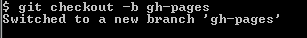

The first step in getting your website on the internets is to create it using an open source code editer. For example to makes this tutorial I am using Adobe brackets. Adobe brackets is a great choice becasue it autofills the closing tags and has a localized live preview feature.
What is git bash? git bash is a downdload from git that allows you to put your website online through a command line. It makes a life more simple once mastered in my opinion.
Once downloaded, open git bash by right clicking on you mouse and a small menu will pop up. It shoulld be on this menu. If not then search the computer files. Downloading github might also be of some use.
Once the previous step has been completed, open up git bash. The first step is to type next to the $ sign; "git init". this will start the process.
Next you need to checkout. To do this, type in the line under you previous line.
Be sure to use "git status" often to insure that you are on the right track.